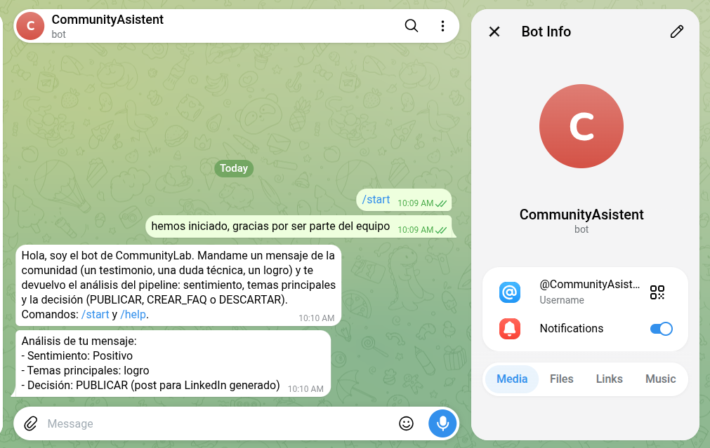
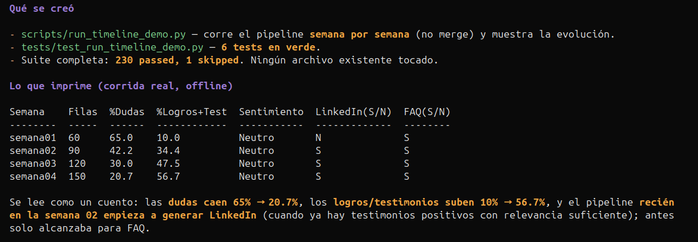

CommunityLab · Equipo 24 · G10
Ingesta multicanal, bot de Telegram y dashboard
Lo que construimos fuera del repo, y el cambio de contrato que necesitamos.
feat/ingesta-mejoras · 2026-10-11
Punto de partida
- Nada de esto está en
main.
- Vive en una rama local (
feat/ingesta-mejoras) y en archivos sin trackear.
- Sin PR abierto.
- Hoy pedimos dirección, no merge.
Qué hicimos (fuera del repo)
- Ingesta multicanal: CSV + Telegram + webhook + merge de fuentes.
- Bot de Telegram: análisis en tiempo real, probado en vivo.
- Línea de tiempo semanal: 4 semanas + runner de evolución.
- Refactor: pipeline en memoria (
_run_with_batch), reusado por webhook y bot.
7 commits
21 archivos
+2.799 líneas
230 tests OK
Ingesta multicanal
- JSON del desafío · CSV · Mastodon · Telegram · webhook HTTP.
load_batch(sources) mergea varias fuentes en una sola corrida.
python scripts/run_demo.py demo_fixed.json sintetico_120.csv --offline
Bot de Telegram
- Por cada mensaje responde: sentimiento + temas + decisión (PUBLICAR / CREAR_FAQ / DESCARTAR).
- Arma un batch de 1 mensaje en memoria y reusa el mismo pipeline.
- Probado en vivo. Diferencial de la demo, no el camino obligatorio.

El bot respondiendo una duda técnica en vivo
Guardá la captura en docs/img/bot-telegram.png y recargá la página
La historia evoluciona
- Preguntas técnicas: 65 % → 21 %
- Testimonios + logros: 10 % → 57 %
- Publicación en LinkedIn: aparece en la semana 2 · Asset FAQ: siempre presente

Semana a semana: las dudas bajan, los logros suben
Guardá la captura en docs/img/historia.png y recargá la página
El pedido: contrato para los gráficos
- El dashboard (HU-S4-003) pide torta de sentimiento y top 10 temas.
- Hoy el pipeline calcula esas distribuciones y las descarta.
- Propuesta aditiva (nada de lo actual cambia):
{
"distribucion_sentimiento": { "Positivo": 42, "Negativo": 18, "Neutral": 31 },
"temas_principales_conteo": [ { "tema": "empleo", "frecuencia": 12 } ]
}
Bot y dashboard: dos procesos
- El bot no vive dentro de Streamlit (long polling vs re-ejecución del script).
- Comparten código de ingesta y sink, nunca el proceso.
- Demo: botón "traer mensajes nuevos" + correr el pipeline.
Telegram ──► fetch_updates ──► Streamlit (dashboard) ──► gráficos
Lo que necesitamos decidir
- ¿Aprobamos el contrato aditivo?
- ¿El bot es scope del S5 o queda como demo?
- La rama pasa las 400 líneas → proponemos PRs encadenados.
- Cerrar #94 primero; después subir ingesta.
Gracias
Detalle completo en docs/propuesta-al-equipo.md